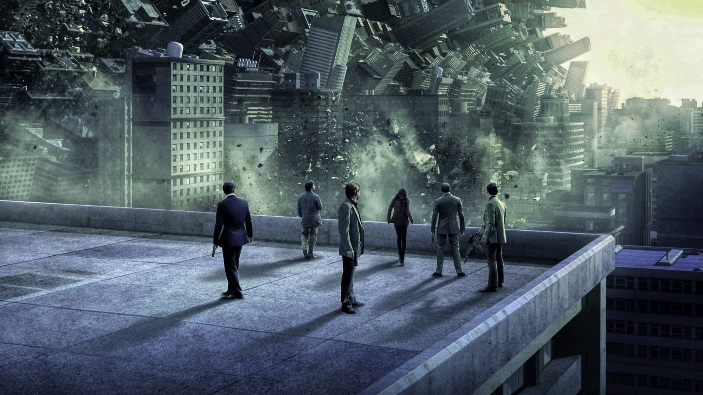
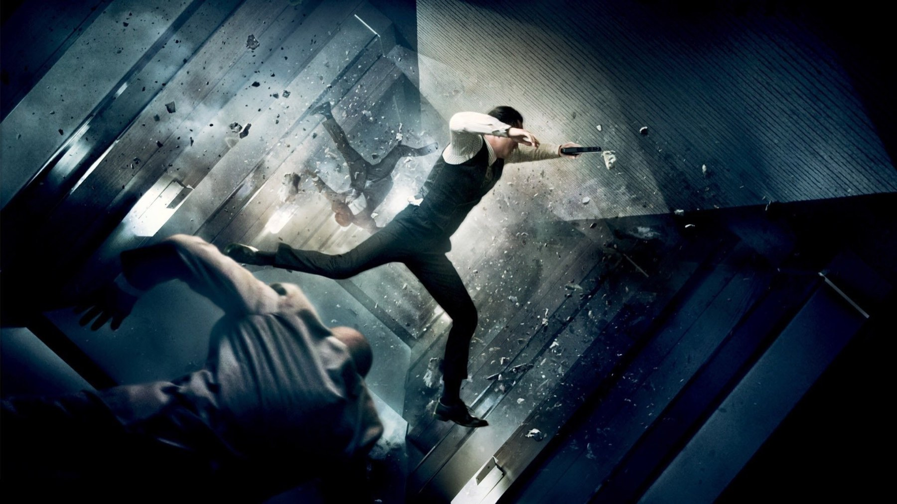
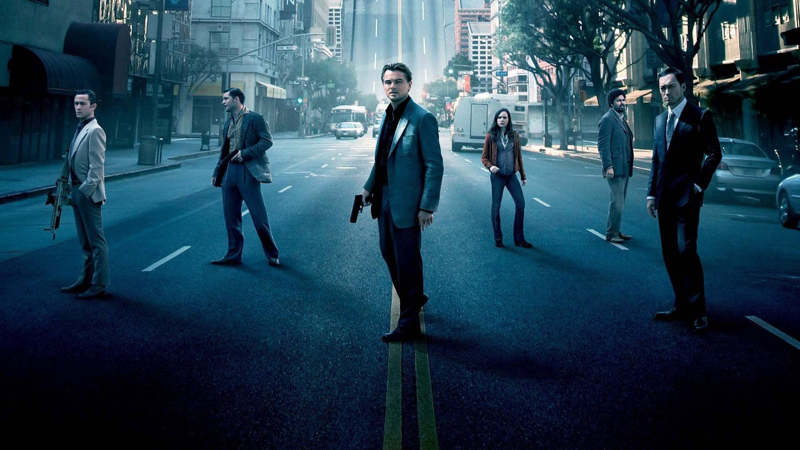
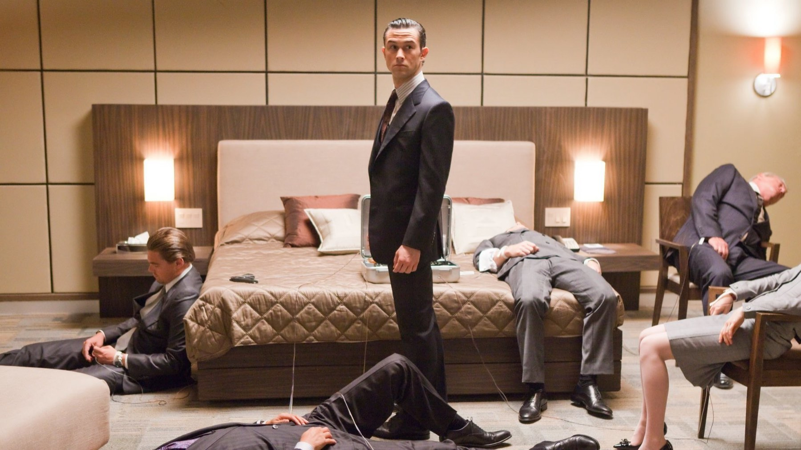

Inception, il finale spiegato (spoiler)
Sedici anni dopo, l'ultima inquadratura di Nolan divide ancora: cosa dicono davvero il regista, la produttrice e Michael Caine
Una trottola gira su un tavolo, la macchina da presa la inquadra, poi il nero e i titoli di coda. Dal 2010 milioni di spettatori si sono chiesti la stessa cosa: cade o non cade? Questa pagina è una lettura del finale di Inception e rivela l'ultima scena, quindi se non avete visto il film fermatevi qui: tornate dopo, il film vale i suoi 148 minuti.
Cosa succede davvero nell'ultima scena
Dom Cobb, il ladro di sogni interpretato da Leonardo DiCaprio, riesce finalmente a tornare a casa e a rivedere i figli. Prima di abbracciarli fa girare il suo totem, la trottola che in tutto il film serve a distinguere il sogno dalla realtà: se continua a girare per sempre, è un sogno. Ma Cobb si allontana dal tavolo senza aspettare. La trottola vacilla, e lo stacco arriva prima della risposta.

Perché la trottola è la domanda sbagliata
La lettura di Christopher Nolan, secondo Wikipedia, è netta: l'ambiguità è voluta, ma il punto della scena non è la trottola. «Cobb non sta guardando la trottola, sta guardando i suoi figli: l'ha lasciata indietro», avrebbe spiegato il regista (traduzione nostra). Nel 2023, sempre stando alla stessa fonte, Nolan ha attribuito alla produttrice Emma Thomas la risposta che ritiene giusta: a quel punto il personaggio di DiCaprio semplicemente non ci pensa più.
È la chiave di tutto il finale. Per l'intero film Cobb è tormentato dal ricordo della moglie Mal, che non accettava più la realtà; la trottola era il suo modo di restare ancorato al mondo vero. Allontanarsi da quel tavolo significa che non ha più bisogno della prova: gli basta il volto dei bambini. Che il mondo intorno a lui sia reale o no, la sua storia è finita, e noi spettatori siamo gli unici rimasti a cercare una conferma che a lui non serve.
Il «se ci sono io è realtà» di Michael Caine
Esiste anche un indizio che gli appassionati citano spesso: Michael Caine, che nel film è il padre di Cobb, ha raccontato che Nolan gli avrebbe detto che ogni volta che lui compare in una scena siamo nella realtà. Wikipedia riporta la dichiarazione, ma resta un racconto di un attore e non una regola scritta nel film: la teoria regge meno dell'idea del regista, perché nell'ultima scena Caine compare solo per un attimo e non basta a scioglierla.

Le teorie più diffuse, e come le leggiamo noi
Le letture più comuni sono tre. La prima: Cobb è tornato davvero e la trottola cadrà. La seconda: è ancora in un sogno, magari quello di Mal, e il lieto fine è una consolazione. La terza, quella di Nolan: la domanda non ha risposta perché il film parla di altro, cioè del bisogno di credere a ciò che amiamo. Noi stiamo con la terza, e per un motivo concreto: tutto il lavoro del film consiste nel convincerci che a Cobb la realtà non interessa più quanto un abbraccio.
Giancarlo Zappoli, su MYmovies, legge il film come un gioco di prestigio tra sogno e realtà, in cui l'uomo fatica a distinguere l'apparenza dal vero. È un buon modo di dirlo: il finale non scioglie il trucco, perché il trucco è il film stesso.
Come lo costruisce la regia
Il finale funziona anche per come è montato. Nolan non chiude con un'inquadratura sulla trottola che cade o resta ferma: taglia mentre il giocattolo è ancora in bilico, e consegna la decisione allo spettatore. La fotografia di Wally Pfister e la musica di Hans Zimmer, accreditati da TMDB, accompagnano l'ultima scena con una luce domestica e calda, lontana dai grattacieli piegati dei sogni. Il contrasto dice già molto: se questo è un sogno, è quello più luminoso e rassicurante del film.
C'è poi un dettaglio narrativo che la trottola fa dimenticare. Per tutto il film il totem è un oggetto di Mal, non di Cobb: è la moglie, non lui, ad aver creato quel rituale. Ripetere il gesto davanti ai figli significherebbe restare prigioniero della sua ossessione. Il fatto che questa volta non lo faccia fino in fondo è, per noi, la vera conclusione del suo percorso.
Cosa guardare alla seconda visione
Se rivedete il film dopo aver letto questa pagina, osservate due cose: i bambini, che nell'ultima scena si girano finalmente verso di lui, e il momento esatto in cui Cobb lascia il tavolo. Sono i punti in cui il film dice ciò che gli interessa davvero. Resta fuori da questa lettura ogni indizio di scena che non sia confermato da chi il film l'ha fatto: sull'anello al dito di Cobb, per esempio, non abbiamo trovato una parola di Nolan.
Un film che ha retto al tempo
Il film è uscito nel 2010 con budget stimato da TMDB di 160 milioni di dollari e secondo Wikipedia ha incassato circa 839 milioni nel mondo, vincendo quattro Oscar (fotografia, montaggio sonoro, sonoro ed effetti visivi). Su Rotten Tomatoes, secondo Wikipedia, ha l'87% di recensioni positive. Rivisto oggi, la struttura a più livelli di sogno funziona ancora, e funziona proprio perché l'ultima inquadratura non risponde.

Dove vederlo
In Italia, secondo TMDB a ottobre 2026, Inception è in streaming su Sky Go, TIMVISION, NOW e HBO Max e disponibile a noleggio su Apple TV, Google Play, Rakuten TV, Amazon Video e CHILI. Se lo rivedete, fate una prova: nell'ultima scena guardate il volto di Cobb e non la trottola.
Il finale di Inception non vuole essere risolto: la trottola è un'esca. Noi lo leggiamo come il momento in cui Cobb smette di cercare la prova e sceglie di credere. Per questo il film resta, dopo sedici anni, uno dei finali più discussi e riusciti di Nolan.
Domande frequenti
La trottola di Inception cade?
Il film non lo mostra. Secondo Wikipedia Nolan ha definito l'ambiguità voluta e ha detto che Cobb non guarda la trottola ma i figli.
Cobb è nella realtà alla fine di Inception?
Non è stabilito. Per il regista conta che Cobb smetta di preoccuparsene.
Dove si vede Inception in Italia?
Secondo TMDB a ottobre 2026 è in streaming su Sky Go, TIMVISION, NOW e HBO Max.